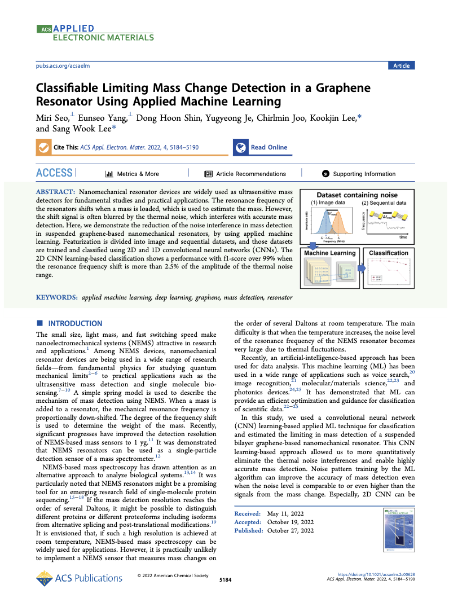
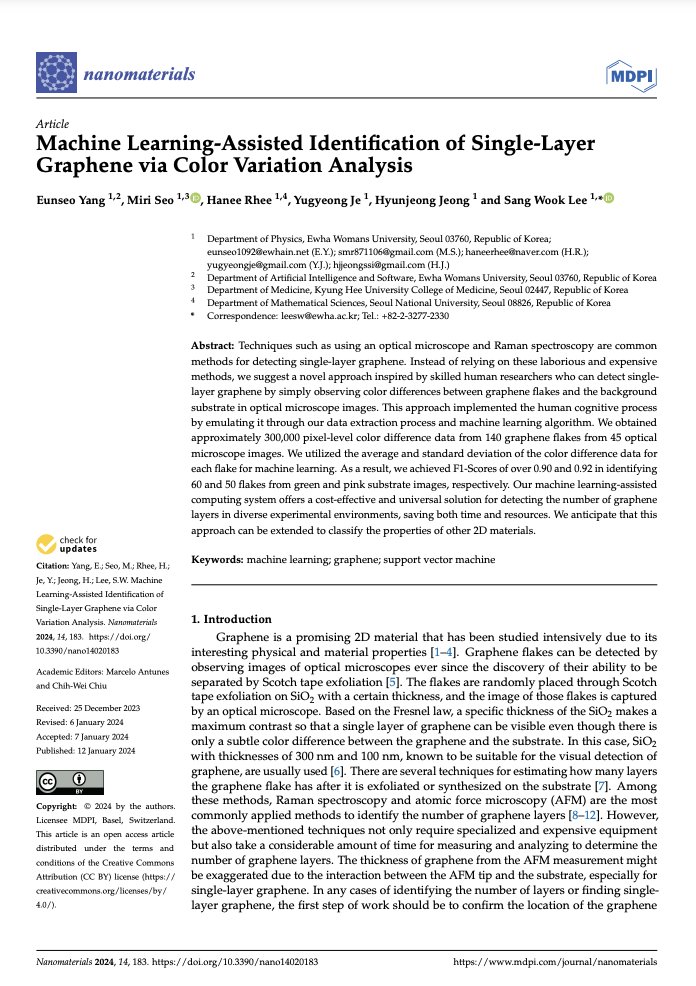

<!DOCTYPE html>
<html lang="en">
<head>
    <meta charset="UTF-8">
    <meta name="viewport" content="width=device-width, initial-scale=1.0">
    <title>Eunseo Yang</title>
    <link rel="stylesheet" href="styles.css">
    <style>
      .publications { max-width: 1200px; margin: auto; }
      .publication { display: flex; align-items: center; justify-content: space-between; margin-bottom: 40px; }
      .publication-image { flex: 0 0 10%; box-shadow: 0 4px 8px rgba(0, 0, 0, 0.1); }
      .publication-image img { max-width: 100%; height: auto; }
      .publication-content { flex: 2; padding-left: 20px; }
      .publication-title { font-size: 15px; font-weight: bold; margin-bottom: 10px; }
      .publication-authors { font-size: 13px; margin-bottom: 5px; }
      .publication-details { font-size: 13px; margin-bottom: 5px; }
      .publication-pdf { 
        text-decoration: none; 
        color: black; 
        background-color: white; 
        padding: 5px 20px; 
        border-radius: 5px; 
        font-size: 10px; 
        border: 1px solid black; 
        transition: color 0.3s, border-color 0.3s; 
      }
      .publication-pdf:hover { color: #006400; border-color: #006400; background-color: white; }
    </style>

</head>
<body>
    
    <header>
        <h1 id="home-link">Eunseo Yang</h1>
        <nav>
            <ul>
                <li><a href="HCI.html">HCI</a></li>
                <li><a href="VUI.html">VUI</a></li>
                <li><a href="Blogs.html">Blogs</a></li>
                <li><a href="Contact.html">Contact</a></li>
            </ul>
        </nav>
    </header>

    <div class="profile-info">
        
        <div class="profile-text">
            <h2>Human-AI Interaction Blog</h2>
            <p>Hello there! I'm a graduate student researching ways to make technology interact with us as naturally as a conversation. My academic exploration revolves around Conversational Agents, Personalized AI, and context-aware AI systems. I aim to create AI systems that sensitively detect human states and situations, responding with perfectly tailored services. While my focus is primarily on voice-based chatbots, I also hold a keen interest in various other types of conversational agents. 

            <br><br>On this site, I'll be delving into HCI concepts, reviewing applied language model papers, and exploring AI services, all with the aim of improving how we live and work with artificial intelligence technology. </p>
        </div>
    </div>

    <main>
        <section id="home">
            <h2>About Me</h2>
             <div class="about-me-info">
                <ul>
                    <li> <strong>Human-Computer Interaction Lab (09/2023-present), Ewha Womans University.</strong> <br>I've started my master's program! <a href="https://hcil-ewha.github.io/homepage/">HCIL@EWHA</a> </li>
                    <li> <strong>Kyung Hee University (KHU) Medical Center (11/2022-7/2023).</strong> <br>I worked as an AI researcher making a diagnosis-assisted tool. </li>
                    <li> <strong>AI Computing Platform Lab (2022), Ewha Womans University.</strong> <br>I worked as an edge AI research intern. <a href="https://acpl.ewha.ac.kr/">ACPL@EWHA</a> </li> 
                    <li> <strong>Bio & Nano Electro-Mechanics Lab (2020-2022), Ewha Womans University.</strong> <br>I worked as an undergraduate researcher on AI algorithms of signal detection and object detection. <a href="https://sites.google.com/view/bnem-ewha/home?authuser=0">BNEM@EWHA</a></li>
                </ul> 
             </div>
        </section>
        <br>        
        <h2>Publications</h2>
        <div class="publications">
          
          <div class="publication">
            <div class="publication-image">
              
            </div>
            <div class="publication-content">
              <div class="publication-title">Machine Learning-Assisted Identification of Single-Layer Graphene via Color Variation Analysis</div>
              <div class="publication-authors">Eunseo Yang, Miri Seo,Hanee Rhee,Yugyeong Je,Hyunjeong Jeong and Sang Wook Lee</div>
              <div class="publication-details">Keywords: machine learning, graphene, support vector machine</div>
              <div class="publication-year">2023</div>
              <a href="paper/Paper1.pdf" class="publication-pdf" target="_blank">PDF</a>
            </div>
          </div>
          
          <div class="publication">
            <div class="publication-image">
              
            </div>
            <div class="publication-content">
              <div class="publication-title">Classifiable Limiting Mass Change Detection in a Graphene Resonator Using Applied Machine Learning</div>
              <div class="publication-authors">Miri Seo, Eunseo Yang, Dong Hoon Shin, Yugyeong Je, Chirlmin Joo, Kookjin Lee and Sang Wook Lee</div>
              <div class="publication-details">Keywords: Applied machine learning, deep learning, graphene, mass detection, resonator</div>
              <div class="publication-year">2022</div>
              <a href="paper/Paper2.pdf" class="publication-pdf" target="_blank">PDF</a>
            </div>
          </div>
        </div>
    </main>

    <footer>
        <p>Made by Eunseo Yang/eunseo1092@gmail.com</p>
    </footer>
    
    <script src="scripts.js"></script>
</body>
</html>
